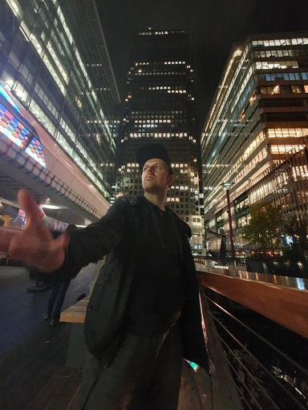

Über Mich
Ich spiele Theater und liebe Musik. Was noch? Ich habe eine Leidschaft für Videospiele - meine Lieblingsgenres sind Action, Shooter und Rollenspiele. Außerdem koche ich viel und gern. Ich probiere gerne Neues aus. Einiges missglückt mir, aber aus Fehlern lernt man bekanntlich. Wer sich austauschen möchte oder kreative Impulse sucht, ist dazu eingeladen gerne eine Nachricht zu schreiben!
Kurzprofil
Was es sonst so zu wissen gibt:
Name
Dennis Weigand-Müller
Interessen
Theater, Musik, Gaming, Kochen, alles Mögliche mit IT
Herkunft
Geboren in Pforzheim, Arbeit in Pforzheim, Wohnort seit zwei Jahren in Königsbach-Stein
Kontakt
E-Mail: dennis.mueller2@iu-study.org
Instagram: @dennrawk
